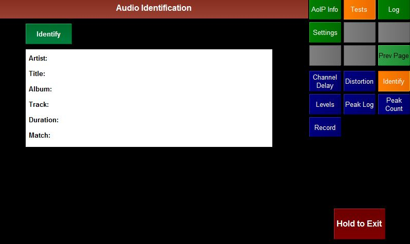

The Identify test plugin attempts to Identify the incoming audio.
- On pressing the Identify button the plugin records 10s of audio.
- It then launches another application that queries Gracenote with the audio.
- If Gracenote recognises the audio then it returns
- The Artist
- The Title of the track
- The Album that the track can be found on
- The Duration of the track
- The point in the track that the Match was found.